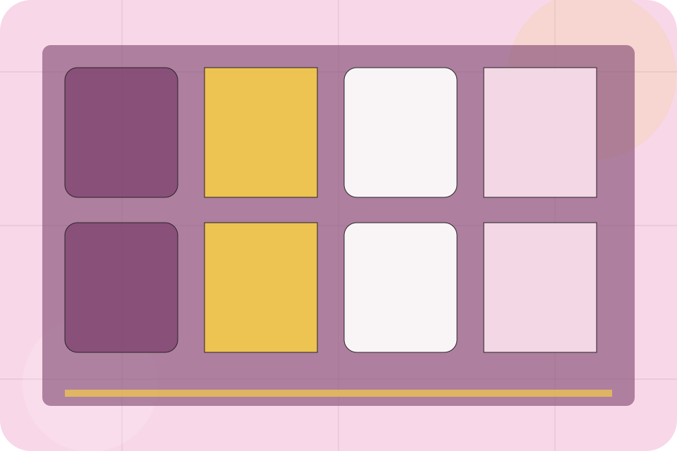
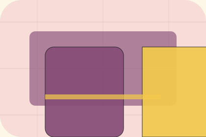

Offers / 01
Offers by Table
Offers shaped for restaurants, cafes & food service decisions.
Offers opens as a clear restaurants decision hub: what Table offers, who it helps, why it matters, and which route to take first.
The first screen combines positioning, proof, primary action, and fast internal navigation, so people can act immediately or compare the rest of the offers route with context.
Check availabilityPlan the visitReserve with context

Offers / 02
Lunch
Lunch defines the better state Table is built to create, with enough detail to make the promise believable.
A sensory restaurant site with pastel stage surfaces, menu cards, room-gallery rhythm, and booking CTAs. The section grounds that direction in concrete benefits, visible tradeoffs, and a next route visitors can use when the promise feels relevant.
Explore OffersOffers / 03
Seasonal
Seasonal defines the better state Table is built to create, with enough detail to make the promise believable.
A sensory restaurant site with pastel stage surfaces, menu cards, room-gallery rhythm, and booking CTAs. The section grounds that direction in concrete benefits, visible tradeoffs, and a next route visitors can use when the promise feels relevant.
Explore OffersBetter State
Seasonal defines what becomes clearer, easier, or safer when Table is the chosen route.
Practical Gain
The benefit is tied to desire and social confidence, not a vague quality claim.
Proof Route
Visitors get a linked path to compare the promise against services, standards, or examples.
Offers / 04
Loyalty
Loyalty defines the better state Table is built to create, with enough detail to make the promise believable.
A sensory restaurant site with pastel stage surfaces, menu cards, room-gallery rhythm, and booking CTAs. The section grounds that direction in concrete benefits, visible tradeoffs, and a next route visitors can use when the promise feels relevant.
Explore OffersBetter State
Loyalty defines what becomes clearer, easier, or safer when Table is the chosen route.
Practical Gain
The benefit is tied to desire and social confidence, not a vague quality claim.
Proof Route
Visitors get a linked path to compare the promise against services, standards, or examples.
Offers / 05
Happyhour
Happyhour defines the better state Table is built to create, with enough detail to make the promise believable.
A sensory restaurant site with pastel stage surfaces, menu cards, room-gallery rhythm, and booking CTAs. The section grounds that direction in concrete benefits, visible tradeoffs, and a next route visitors can use when the promise feels relevant.
Explore OffersOffers / 06
Groups
Groups defines the better state Table is built to create, with enough detail to make the promise believable.
A sensory restaurant site with pastel stage surfaces, menu cards, room-gallery rhythm, and booking CTAs. The section grounds that direction in concrete benefits, visible tradeoffs, and a next route visitors can use when the promise feels relevant.
Explore OffersOffers / 07
Conditions
Conditions defines the better state Table is built to create, with enough detail to make the promise believable.
A sensory restaurant site with pastel stage surfaces, menu cards, room-gallery rhythm, and booking CTAs. The section grounds that direction in concrete benefits, visible tradeoffs, and a next route visitors can use when the promise feels relevant.
Explore OffersOffers / 08
Expiry
Expiry defines the better state Table is built to create, with enough detail to make the promise believable.
A sensory restaurant site with pastel stage surfaces, menu cards, room-gallery rhythm, and booking CTAs. The section grounds that direction in concrete benefits, visible tradeoffs, and a next route visitors can use when the promise feels relevant.
Explore OffersTable structures expiry around better state, practical gain, and a clear next route so visitors can compare the block quickly before they reserve a table.
Reserve TableOffers / 09
Signup
Signup defines the better state Table is built to create, with enough detail to make the promise believable.
A sensory restaurant site with pastel stage surfaces, menu cards, room-gallery rhythm, and booking CTAs. The section grounds that direction in concrete benefits, visible tradeoffs, and a next route visitors can use when the promise feels relevant.
Explore OffersOffers / 10
Reserve Table
Table closes the offers route with a clear action, a quick reminder of the value, and a low-friction way to reserve a table.
Visitors who are ready can use the primary action. Visitors who are still comparing can scan the section links, proof, and support routes before they reserve a table.
Reserve TableThe final block keeps the choice simple: act now, compare one more proof route, or send enough detail for a focused response.
Reserve Tabledesire and social confidence
Reserve Table
A sensory restaurant site with pastel stage surfaces, menu cards, room-gallery rhythm, and booking CTAs. Offers ends with a direct path to reserve a table, plus enough context for visitors who still need to compare.

Reserve TableNotes
Menus, allergens, prices, and availability must be confirmed by the venue before ordering or booking.